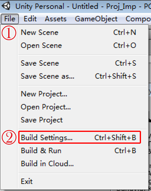
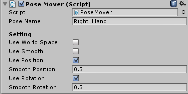
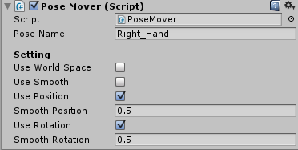

Ximmerse SDK for Unity3D (v2.0.1)
| Document Status: | Release |
| Document Issue Number: | 2.0.1 |
| Issue Date: | 2016-04-01 |
| Security Status: | Public |
| Author: | YouSing Huang, Yongtao Hu, Jingwen Dai |
| _ _ _ |
© 2015 XIMMERSE All rights reserved
UNCONTROLLED COPY: The master of this document is stored on an electronic database and is “write protected”; it may be altered only by authorized persons. While copies may be printed, it is not recommended. Viewing of the master electronically ensures access to the current issue. Any hardcopies taken must be regarded as uncontrolled copies.
Update History - 04/01/2016: SDK v2.0.1 released. Add Native Android SDK. - 02/21/2016: SDK v2.0 released. Support Google Cardboard. - 01/23/2016: Support Windows 10. - 12/30/2015: Native C++ SDK is released. - 12/16/2015: Add "Developing with PC (Windows)" chapter. - 12/01/2015: SDK v1.0 released.
1 Release Statement
1.1 Foreword
This SDK is designed mainly for Unity3D Engine. In future, we will provide support for other developing environments.
1.2 Development Overview
Please check the Open Box Test Video to make sure the X-Hawk and X-Cobra work properly. More demos and tools for validating our devices can be found here.
- X-Hawk + X-Cobra + Gear VR Please refer to 8 Developing with Gear VR of this Doc for details.
- X-Hawk + X-Cobra + PC with Unity Please refer to 9 Developing with PC (Windows) of this Doc for details.
- X-Hawk + X-Cobra + PC with Native C++ Please refer to here for details.
- X-Cobra / X-Swift + Bluetooth USB Adapter + PC with Unity Please refer to 6.1.3 InputTest (X-Cobra) and 6.1.4 InputTest (X-Swift) of this Doc for details.
- X-Hawk + X-Cobra + Google Cardboard Please refer to 7 Developing with Google Cardboard for details.
- X-Cobra / X-Swift + Google Cardboard Please refer to 7.4 Connect Ximmerse Devices via Bluetooth in Android for details.
1.3 Test Environment
- Operating System (OS): Windows 7/8/10 PC
- Unity3D Engine: Unity v5.1.3f1 (32-bit)
1.4 Notes
- This SDK does not support Linux or Mac OS X, please develop using Windows (PC).
- You can use other versions of Unity3D. However, versions 4.X are not verified or technically supported.
- It is recommended to use Versions 5.X due to its support for VR.
- In terms of compatibility or script update issues for different versions of Unity3D, it is recommended to use preprocessor macros.
1.5 Technical Support
- Email: support@ximmerse.com
2 SDK Setup
2.1 Import Resource Package
- In an empty Unity project, click Unity menu
Assets$\rightarrow$Import Package$\rightarrow$Custom Package...
- In the file selection dialog, select
Ximmerse SDK 2.0.unitypackage.
- In
Importing package, clickImport.
- Done! There will be two folders named
PluginsandXimmerse SDKunder folder$(ProjectDir)/Assets.
2.2 Setup Ximmerse SDK under VR HMD SDK
Note: We will take Unity VR as an example. Please make sure that your Unity version supports VR mode, i.e. v5.1.0+.
- Click Unity menu
File$\rightarrow$Build Settings... - In
Build Settings, clickPlayer Settings....
- In
Inspectorview $\rightarrow$Settings for PC, Mac & Linux Standalonetab $\rightarrow$ check theVirtual Reality Supportedcheckbox.
- Click Unity menu
File$\rightarrow$New Scene, to create a scene.
- Click Unity menu
GameObject$\rightarrow$Create Emptyto add a object and rename it toVRCameraRig. - Drag
Main CameraunderVRCameraRigto makeVRCameraRigasMain Camera's parent. - Reset
Main Camera's transform. - Select
VRCameraRig$\rightarrow$ clickAdd Component$\rightarrow$ selectVRContext. - Config
Tracking SpacetoVRCameraRigandCenter Eye AnchortoMain Camera. - In
Project Browser$\rightarrow$Assets$\rightarrow$Ximmerse SDK$\rightarrow$Prefabs$\rightarrow$Input$\rightarrow$ drag the prefabs named_CrossInputto theHierarchyview to instantiate it.
2.3 Input Setup for Ximmerse Hardwares
As shown in the following figure, right boxes are for left hand X-Cobra setup and blue boxes for right hand X-Cobra. Controller Formats are the format registered to CrossInputManager and Map Settings are the mapping setup.
Elements' names can be modified in Map Settings. Take left hand X-Cobra as an example by double clicking X-Hawk Alpha 0 (Left) (XHawkMapSetting), buttons on the both sides of the left hand X-Cobra can be setup for switching weapons by changing Button[1] and Button[3] to Prev Weapon and Next Weapon accordingly.
In the script, the code for setup switch weapons is:
void Update() {
if(CrossInputManager.GetButtonDown("Left_Prev Weapon")){
// Use Prev Weapon...
}else if(CrossInputManager.GetButtonDown("Left_Next Weapon")){
// Use Next Weapon...
}
}
2.4 Programming
2.4.1 Access Axes and Buttons
- Import
Ximmerse.CrossInputnamespace.cpp using Ximmerse.CrossInput; -
Access the
Horizontalaxis of left joystick and theVerticalaxis of right joystick.cpp float left_h =CrossInputManager.GetAxis("Left_Horizontal"); float right_v =CrossInputManager.GetAxis("Right_Vertical");These information can also be obtained by
VirtualControlleras follows, which are equivalent to the above functions.cpp float left_h =VirtualController.controllers[0].GetAxis("Horizontal"); float right_v =VirtualController.controllers[1].GetAxis("Vertical");3. Access theFire1button of left joystick and theJumpbutton of right joystick. ```cpp if(CrossInputManager.GetButtonDown("Left_Fire1")) { // Let's fire... }if(CrossInputManager.GetButtonDown("Right_Jump")){ // Let's jump... } ```
Similarly, these information can also be obtained by
VirtualControlleras follows, which are equivalent to the above functions.```c if(VirtualController.controllers[0].GetButtonDown("Fire1")){ // Let's fire... }
if(VirtualController.controllers[1].GetButtonDown("Jump")){ // Let's jump... } ```
2.4.2 Access Position and Rotation
Taking the sample script HandController.cs under folder $(ProjectDir)/Assets/Ximmerse SDK/Scenes/Example as an example:
- Import
Ximmerse.CrossInputnamespace.cpp using Ximmerse.CrossInput; -
Obtain the reference of
VirtualPosebyCrossInputManager.VirtualPoseReference(poseName).cpp m_Pose=CrossInputManager.VirtualPoseReference(poseName);The properties and fields of
VirtualPoseare as follows: ```cpp public class VirtualPose:SmartPointer{ public string name{ get; private set; } public bool matchWithInputManager { get; private set; }public bool active=true; public int id; public Vector3 position; public Quaternion rotation; ...}
3. Set `position` and `rotation` of `Transform` to be `position` and `rotation` of `VirtualPose` in functions like `MonoBehaviour.FixedUpdate()`.cpp ////// /// protected virtual void FixedUpdate(){ // m_HandTrans.position=m_Pose.position; m_HandTrans.rotation=m_Pose.rotation; } ```
3 Ximmerse.Core Namespace
3.1 Overview
This namespace is used for accessing the APIs of Ximmerse's hardwares. As our beta versions are still in a fast iteration stage, there will be different versions for the supported hardware. Please pay attention to what your DK version is. Though there will be big changes for this namespace, it should be OK to use Ximmerse hardwares with general software as long as the name and address of the equipment are set properly. Note that in most cases, you will not need to access this namespace. In terms of input interfaces, you only need to access Ximmerse.CrossInput. You can also apply Razer's Hydra in developing as Ximmerse.CrossInput is a compatible input solution.
3.2 Legacy Interface
In Unity, Ximmerse's joystick (X-COBRA) is abstracted as DeviceBase. Information related to the Ximmerse's joystick (e.g. axes, buttons, triggers and IMU) is abstracted as SensorBase.
Prefabs should set up automatically in the SDK. Developers only need to set the corresponding config file under folder project_folder/Ximmerse SDK/Resources/Configs/ in order to setup Ximmerse's X-COBRA after the formal release.
DeviceName is the device number. Please refer to the txt file under the crossponding samples.
DeviceAddress is the serial port address under Windows, which is the Bluetooth address under Android.
FmtJoy refers to the character string of the input formatted key. For example, key "Fire1" will be formatted to "Left_ Fire1" in CrossInputManager (under Ximmerse.CrossInput namespace) when joystick's FmtJoy is "Left_{0}".

Remarks:
- Config files are located under folders below:
- Unity editor: project_folder/Ximmerse SDK/Resources/Configs/
- Windows release version: release_folder/release_folder_Data/StreamingAssets/Configs/
- Android release version: Android_SD_card_root_folder/Ximmerse Runtime/Configs/
3.3 X-Hawk SDK
If only using X-Hawk, it is recommended to use new X-Hawk SDK under path ${ProjectDir}\Assets\Ximmerse SDK\Scripts\Core\X-Hawk SDK (wrapper of C++ SDK), within which XHawkInput is similar to SixenseInput in Hydra joystick SDK and XHawkInputManager is the wrapper of XHawkInput in CrossInput system.
3.4 Misc.
Please refer to ${ProjectDir}\Assets\Ximmerse SDK\Scenes\InputTest for details of different input scenes.
4 Ximmerse.CrossInput Namespace
4.1 Overview
Compatible solution for multiple input. CrossInputManager is the access entry point, which is modified from the official sample UnityStandardAssets.CrossPlatformInput. In order to run Ximmerse.CrossInput successfully, GameObject with CrossInputManager component (whose properties source list should also be set up properly) should be added to the game scene.
Tip: You can turn off
CrossInputManager'suseCrossInputbefore running so thatCrossInputManagerwill use the embedded input APIs of Unity.
On the other hand, you can customize other input solutions, such as Razer's Hydra, Xbox 360 controller or Ximmerse's joystick (X-COBRA). Instead of writing different access interfaces for different input solutions, you only need to access the static functions of CrossInputManager.
For example, assuming you want to acquire the status of the joystick and button (pressed or not), you will need to call Input.GetAxis(axisName) and Input.GetButton(buttonName) in native Unity programming. With Ximmerse.CrossInput input system, they can be easily replaced by CrossInputManager.GetAxis(axisName) and CrossInputManager.GetButton(buttonName).
Current input solutions can be divided into two categories: traditional controllers (keyboard & mouse and joystick) and motion controllers (with position and orientation in space). With Ximmerse.CrossInput, motion sensing input is abstracted as VirtualPose class (with position and orientation in space). You can obtain the reference of the VirtualPose by simply calling CrossInputManager.VirtualPoseReference(name).
Tip: In the
UnityStandardAssets.CrossPlatformInputsample, joystick and button are abstracted asVirtualAxisandVirtualButton. Please refer to the Extensions section on how to extendXimmerse.CrossInput.
In this SDK, the full preset hierarchy is as follows. To disable one particular input component, simply set GameObject's active to false on the respective script.
4.2 Selected Classes Introduction
4.2.1 CrossInputManager
Input manager, similar to UnityStandardAssets.CrossPlatformInput.
The related input APIs of CrossPlatformInputManager are as follows:
| Return Type | Function | Description |
|---|---|---|
Boolean |
AxisExists(String) |
return true while the virtual axis identified by given string exists |
Boolean |
ButtonExists(String) |
return true while the virtual button identified by given string exists |
Single |
GetAxis(String) |
return the value of the virtual axis identified by given string |
Single |
GetAxisRaw(String) |
return the value of the virtual axis identified by given string with no smoothing filtering applied |
Boolean |
GetButton(String) |
return true while the virtual button identified by given string is held down |
Boolean |
GetButtonDown(String) |
return true during the frame the user pressed down the virtual button identified by given string |
Boolean |
GetButtonUp(String) |
return true the first frame the user releases the virtual button identified by given string |
Boolean |
PoseExists(String) |
return true while the virtual pose identified by given string exists |
Vector3 |
GetPosePosition(String) |
return the value of the position in the space identified by given string |
Quaternion |
GetPoseRotation(String) |
return the value of the rotation in the space identified by given string |
Void |
RegisterVirtualAxis(VirtualAxis) |
register one virtual axis to CrossInputManager |
Void |
RegisterVirtualButton(VirtualButton) |
register one virtual button to CrossInputManager |
Void |
RegisterVirtualPose(VirtualPose) |
register one virtual pose to CrossInputManager |
Void |
SetAxis(String,Single) |
set the value of the axis identified by given string |
Void |
SetAxisNegative(String) |
set the value of the axis identified by given string to -1 |
Void |
SetAxisPositive(String) |
set the value of the axis identified by given string to 1 |
Void |
SetAxisZero(String) |
set the value of the axis identified by given string to 0 |
Void |
SetButtonDown(String) |
set the virtual button identified by given string to be held down |
Void |
SetButtonUp(String) |
set the virtual button identified by given string to be released |
Void |
SetPose(String,Vector3,Quaternion) |
set the value of the pose identified by given string |
Void |
SetPosePosition(String,Vector3) |
set the value of the position identified by given string |
Void |
SetPoseRotation(String,Quaternion) |
set the value of the rotation identified by given string |
Void |
SetVirtualMousePositionX(Single) |
set the value of x-axis of the virtual mouse |
Void |
SetVirtualMousePositionY(Single) |
set the value of y-axis of the virtual mouse |
Void |
SetVirtualMousePositionZ(Single) |
set the value of z-axis of the virtual mouse |
Void |
UnRegisterVirtualAxis(VirtualAxis) |
un-register one virtual axis |
Void |
UnRegisterVirtualButton(VirtualButton) |
un-register one virtual button |
Void |
UnRegisterVirtualPose(VirtualPose) |
un-register one virtual pose |
VirtualAxis |
VirtualAxisReference(String) |
return the reference of the virtual axis identified by given string |
VirtualAxis |
VirtualAxisReference(Object,String,Boolean) |
return the reference of the virtual axis identified by given string |
VirtualButton |
VirtualButtonReference(String) |
return the reference of the virtual button identified by given string |
VirtualButton |
VirtualButtonReference(Object,String,Boolean) |
return the reference of the virtual button identified by given string |
VirtualPose |
VirtualPoseReference(String) |
return the reference of the virtual pose identified by given string |
VirtualPose |
VirtualPoseReference(Object,String,Boolean) |
return the reference of the virtual pose identified by given string |
Remarks:
1. A mouse's axis information can be obtained by CrossInputManager.mousePosition. Due to poor user experience, it is not recommended to use traditional mouse as VR input.
2. Alike UnityEngine.Input, CrossInputManager's interface can only be accessed in MonoBehaviour.Update().
3. The priority of CrossInputManager script should be set higher than the normal ones in order to make sure input can be written to CrossInputManager's cache while being called. This can be set in Edit$\rightarrow$Project Settings$\rightarrow$Script Execution Order:

4.2.2 UnityInput
You can write the embedded input of Unity to CrossInputManager's input cache. The embedded input of Unity can be further obtained through CrossInputManager.
4.2.3 VirtualController
Input interface to distinguish left and right hands. It's not easy to distinguish left and right hands as strings are used as keys in CrossInputManager. With the handy accessor VirtualController, developers can use formatted strings and the string arrays of input keys to instantiate an instance. Input can be accessed by VirtualController.GetAxis(axisName) and VirtualController.GetButton(buttonName). Please refer to the following example:
string[] joystickFmts=new string[2]{"j0_{0}","j1_{0}"}; // joystick list
string[] axes=new string[2]{"Horizontal","Vertical"}; // axes list
string[] buttons=new string[4]{"Fire1","Fire2","Fire3","Jump"}; // button list
VirtualController[] joysticks=new VirtualController[2]{new VirtualController(),new VirtualController()}; // VirtualController list
// initialize VirtualController
joysticks[0].InitInput(joystickFmts[0],axes,joystickFmts[0],buttons, "");
joysticks[1].InitInput(joystickFmts[1],axes,joystickFmts[1],buttons, "");
// access input through VirtualController
joysticks[0].GetAxis("Horizontal"); // use short key "Horizontal", actual registered key is "j0_Horizontal"
joysticks[1].GetButtonDown("Fire1"); // use short key "Fire1", actual registered key is "j1_Fire1"
4.3 Extensions
As mentioned above, different input solutions are abstracted as IInputSource interfaces in SDK. Thus, developers can customize multiple input solutions of their own.
The interface function of IInputSource is as follows:
public interface IInputSource
{
// Methods
int EnterInputFrame();
int ExitInput();
int ExitInputFrame();
int InitInput();
// Properties
bool enabled {get; set;}
}
| Function | Description |
|---|---|
InitInput() |
initialize input source, return 0 if successful |
ExitInput() |
exit input source and release related sources, return 0 if successful |
EnterInputFrame() |
enter input frame, write corresponding input information to CrossInputManager's input cache, return 0 if successful |
ExitInputFrame() |
exit input frame, return 0 if successful |
Remarks:
1. Input cache refers to the list of VirtualAxis, VirtualButton and VirtualPose of CrossInputManager.
2. Input frame refers to the time stamp when the program reads the input (MonoBehaviour.Update()).
In order to run in Ximmerse.CrossInput, it only needs to implement the MonoBehaviour of IInputSource's interface and add it to the property source list of CrossInputManager.
Similarly, Razer's Hydra can also be used due to its compatibility with Ximmerse.CrossInput by adding its SDK SixenseUnityPlugin to the project and compatible scipt Sixense Input.cs to CrossInputManager.
5 Other Namespaces
Some scripts belong to the Utility class. Demos are available for them where you can edit to fit your needs. Some namespaces belong to low level wrapper of the SDK which in general cases, will not be used in project development.
There are some other namespaces in this SDK, including:
- Ximmerse.Animation: for easy implementation of animation solutions, like HandAnimator.
- Ximmerse.IO: for IO Stream under Windows and Android and wrapper of IO tools class.
- Ximmerse.UI: for extension of UGUI and the compatible solution of traditional UI and VR UI.
6 Samples
Note: all samples can be found in folder
$(ProjectDir)/Assets/Ximmerse SDK/Scenes/.
6.1 CrossInputManager GUI
This sample can be found in folder $(ProjectDir)/Assets/Ximmerse SDK/Scenes/InputTest, which further contains three samples, i.e. InputTest (X-Hawk), InputTest (X-Cobra) and InputTest (X-Swift).
6.1.1 InputTest (X-Hawk)
This sample demonstrates how to obtain the detailed X-Cobra's information (including position, rotation, axis, trigger and buttons, etc.) through X-Hawk. Please refer to 2.1 InputTest (X-Hawk) (steps 1-3) of Tools Instructions for detailed setup steps.

6.1.2 InputTest (X-Hawk SDK)
Similar to InputTest (X-Hawk), this sample also demonstrates how to obtain the detailed X-Cobra's information (including position, rotation, axis, trigger and buttons, etc.) through X-Hawk, but shows them in plain text format. Setup steps are same to 6.1.1 InputTest (X-Hawk).

6.1.3 InputTest (X-Cobra)
This sample demonstrates how to obtain the detailed X-Cobra's information (including rotation, axis, trigger and buttons, etc.) through Bluetooth USB adapter plugged in PC. Please refer to 2.3 InputTest (X-Cobra) (steps 1-4) of Tools Instructions for detailed setup steps.
6.1.4 InputTest (X-Swift)
This sample demonstrates how to obtain the detailed X-Swift's information (i.e. rotation) through Bluetooth USB adapter plugged in PC. Please refer to 2.4 InputTest (X-Swift) (steps 1-3) of Tools Instructions for detailed setup steps.

6.2 HandController
This sample can be found in folder $(ProjectDir)/Assets/Ximmerse SDK/Scenes/Examples, which demonstrates how to obtain the VirtualPose and how to control hand stretches using the trigger value.
6.3 Cardboard Test
This sample can be found in folder $(ProjectDir)/Assets/Ximmerse SDK/Scenes/Examples, which demonstrates how to visualize X-Cobra's real-time status for Cardboard development. Setup steps are same to 6.1.1 InputTest (X-Hawk).
6.4 HydraToXimmerse
This sample can be found in folder $(ProjectDir)/Assets/Ximmerse SDK/Scenes/Other Examples, which demonstrates how to quickly transfer a Razer's Hydra project to Ximmerse.CrossInput. Some modifications exist for the interfaces to be accessed.
If SixenseHands of SixenseInput SDK is used in this sample, the hierarchy will be

If HydraToXimmerse of this SDK is used in this sample, the hierarchy will be

- First remove the original
SixenseInputand add the preset object ofCrossInputManagerthen, check theAs Hand Joystickcheckbox of the compatibleCrossInput'sSixenseInput,VirtualControllerthus will create two joystick accessors automatically.
- Remove
SixenseHandsControllerscript and add the parent transform withPoseMoverforHand-RightandHand-Leftto achieve no rotation shift of theTransformcontrolled byPoseMover, i.e. no rotation for theTransformcontrolled byPoseMoverwhen the correspondingVirtualPosehas no rotation. Meanwhile, setlocalPositionofHand-RightandHand-LefttoVector3.zero.
 

- Move the left and right pivots of
SixenseInputthat is compatible toCrossInputto wherePoseMoveris. - Modify
SixenseHand.csto importXimmerse.CrossInputnamespace.cpp // <!-- TODO using Ximmerse.CrossInput; // TODO --> - Replace
SixenseInput.Controllerin the script byVirtualController.cpp // <!-- TODO //public SixenseInput.Controller m_controller = null; public VirtualController m_controller; // TODO --> - Obtain
m_controllerfromVirtualController.controllers, reference 0 for left hand and 1 for right hand.cpp // <!-- TODO //m_controller = SixenseInput.GetController( m_hand ); m_controller = VirtualController.controllers( (int)m_hand-1 ); // TODO --> - When accessing input interface, replace the original
SixenseInputfunction with theVirtualControllerfunction of Unity style.cpp // <!-- TODO //if ( m_controller.GetButton(SixenseButtons.ONE) ) { if ( m_controller.GetButton("ONE") ) { // do something } // TODO --> - Map trigger value to axes and buttons, i.e.
VirtualController.GetAxis(triggerName)andVirtualController.GetButton(triggerName).cpp // <!-- TODO //float fTriggerVal = m_controller.Trigger; float fTriggerVal = m_controller.GetAxis("TRIGGER"); // TODO --> - Ensure that
triggerNameis not a constant. It should be consistent with the crossponding value ofXimmerse.CrossInput.CrossInputManager. It's more convenient to obtain the information of given joystick from multiple ones by replacing the full key ofCrossInputManagerwith short keys.
7 Developing with Google Cardboard
7.1 SDK Environment Setup
- Create an empty Unity project.
- Import Cardboard SDK for Unity package
CardboardSDKForUnity.unitypackage(can be downloaded from here) and Ximmerse SDK 2.0Ximmerse SDK 2.0.unitypackageto the project. - In
Filemenu $\rightarrow$Build Settings...$\rightarrow$Player Settings...$\rightarrow$Settings for PC, Mac & Linux Standalone$\rightarrow$Other Settings$\rightarrow$Configuration$\rightarrow$Scripting Define Symbols$\rightarrow$ add compilation flagCARDBOARD_SDK. - In Unity project folder
$(ProjectDir)$\rightarrow$Assets$\rightarrow$Plugins$\rightarrow$Android$\rightarrow$ delete fileAndroidManifest.xml$\rightarrow$ rename fileAndroidManifest_Cardboard.xmltoAndroidManifest.xml.
7.2 Build APK
Note: we will take how to build CardboardTest.apk as an example.
- Setup SDK environment as described above.
- Delete the default game object
Main Camerafrom the scene. - Menu
GameObject$\rightarrow$Create Empty$\rightarrow$ rename it toMain Camera. - Drag both
Assets\Cardboard\Prefabs\CardboardMain.prefabandAssets\Ximmerse SDK\Prefabs\Input\_CrossInput.prefabto the scene. - Add
VR Contextcomponent to game objectCardboardMainby selectingCardboardMain$\rightarrow$ inInspectorview $\rightarrow$ clickAdd Componentbutton $\rightarrow$ search and selectVR Context. ConfigTracking SpacetoCardboardMainandCenter Eye AnchortoHeadorMain Camera. - Add reset buttons
Left_StartandRight_StarttoVR Context. - Drag
pf_x_cobra_00.prefabandpf_x_cobra_01.prefabunderAssets\Ximmerse SDK\Prefabs\Inputto the scene. - (optional) Modify camera components
Main Camera,Main Camera LeftandMain Camera Rightby selecting them (one by one) $\rightarrow$ inInspectorview $\rightarrow$Camera$\rightarrow$Clear Flags$\rightarrow$ selectSkybox, then setClipping Planes'sNearto0.01.
- (optional)
_CrossInput$\rightarrow$_XimInput$\rightarrow$X-Hawk$\rightarrow$ inInspectorview $\rightarrow$X Hawk Input Manager (Script)$\rightarrow$ modifySensitivityto change the scaling values of lighting blobs, orCardboardMain$\rightarrow$Head$\rightarrow$Main Camera$\rightarrow$Pivot$\rightarrow$ inInspectorview $\rightarrow$ modifyTransformto change the space transform of lighting blobs. - Generate APK by clicking menu
File$\rightarrow$Build Settings...$\rightarrow$Android$\rightarrow$ check on optionsDevelopment BuildandAutoconnect Profiler$\rightarrow$Build. > Note: > 1. If it asks to search for the Android SDK when building, you will ned to specify the Android SDK root folder in the file dialog: > > - If you haven't downloaded Android SDK yet, you can download it from here, e.g.installer_r24.4.1-windows.exe. > - If it further complains that the Android SDK is outdated, you will need to manually update it by going into its installed root folder $\rightarrow$ runSDK Manager.exe$\rightarrow$ install a newer version Android SDK Build Tools, e.g.v21.1.2: > > 2. If it complains that Bundle Identifier has not been set up correctly, you will need to modify the Bundle Indentifier accordingly, e.g.com.Xim.CardboardTest: >
7.3 Run APK
There are two ways to run it: 1. Run it as default applications. After this, the application will run automatically when plugin Android phone to X-Hawk. Steps: 1. Connect the X-Hawk's USB Connector port B to the Android phone. Wait until Choose an app for the USB device dialog pops up. Note that all the available apps that use Ximmerse SDK will be displayed here.
> Tip:
> 1. Similar to above, if the X-Hawk in your hand is the latest version with a LED indicator, after this step, it will stop breathing (blinking) and remain lighted.
> 2. If the <kbd>Choose an app for the USB device</kbd> dialog does not pop up after a while or another app that you do not want launches automatically, you will need to clear the cache of the previous apps that use Ximmerse SDK. This can be done in `Settings` $\rightarrow$ `Device` $\rightarrow$ `Applications` $\rightarrow$ `Default applications` $\rightarrow$ `Clear defaults` $\rightarrow$ `CLEAR`.
> <div align = center><img src="imgs/Clear.png"></div>
2. Seleck `Toy Brick` and click the `ALWAYS` option to continue. You will be able to see the demo running on the Android phone.
<div align = center><img src="imgs/App2.png"></div>
<div align = center><img src="imgs/CardboardTest.png"></div>
-
After APK runs, manually click the
OKbutton in the dialog.Note: The first running style can be disabled by removing or commenting out the following code segment of file
${ProjectDir}\Assets\Plugins\Android\AndroidManifest_Cardboard.xmland merge it toAndroidManifest.xmlfile of the project.
7.4 Connect Ximmerse Devices via Bluetooth in Android
Ximmerse Devices including X-Cobra and X-Swift can be connected via Bluetooth in Android.
Steps: (You can also refer to our Bluetooth Connect Tutorial Video for demonstration)
Note: Make sure to first exit X-Console tool if it is running on PC.
- Install BTconnect.apk.
- Turn on Bluetooth in Android mobile.
- Turn on X-Cobra and X-Swift that you want to connect.
- Run Bluetooth Setting. Detailed functions are as follows:
① Path of Bluetooth setting file.
② Save current Bluetooth setting.
③ Reload Bluetooth setting.
④ Device name.
⑤ Device Bluetooth address.
⑥ Scan and connect devices.
⑦ Quit application.
- Click
Savebutton to save current Bluetooth setting after setting properly, then clickQuitto exit the application. - Done. Now you should be able to connect and use the corresponding Bluetooth devices in the deployed APKs.
8 Developing with Gear VR
8.1 Hardware Requirement
- Ximmerse X-Hawk
- Ximmerse X-Cobra
- Ximmerse X-Hawk USB Connector
- Gear VR Innovator Edition for S6
- Samsung Galaxy S6


8.2 Steps
We will take Toy Brick Cardboard APK as an example.
Tip: You can refer to our Gear VR Tutorial Video for demonstration.
- Install Toy Brick Cardboard APK on Galaxy S6.
-
Turn on developer mode on Galaxy S6. This can be done in
Settings$\rightarrow$Device$\rightarrow$Applications$\rightarrow$Application manager$\rightarrow$Gear AR Service$\rightarrow$Storage$\rightarrow$MANAGE STORAGE$\rightarrow$Developer$\rightarrow$Developer mode$\rightarrow$ ON. >Tip: If you do not see theDeveloper modeoption inGear AR Service, tapVR Server Versionat least 6 times. By re-entering the dialog, you will be able to see it.2. Connect the X-Hawk's USB Connector (the white USB cable) port C to a power bank (make sure power bank is on). 3. Connect the X-Hawk's USB Connector port A to the X-Hawk.
Tip: If the X-Hawk in your hand is the latest version with a LED indicator, after this step, the LED indicator will first breath (blink) in a lower pace. Wait until it goes into the faster-pace breathing state before going to the next step. 4. Set application running modes. Please refer to 7.3 Run APK for details. 6. Unplug X-Hawk's USB Connector port B from the Galaxy S6 and connect it to the micro USB port of the Gear VR. 7. Clear all apps running in background of Galaxy 6 and insert it into Gear VR. 8. Connect X-Cobra to X-Hawk. This can be done by: 1. Turn on X-Cobra by press its power button. 2. Put X-Cobra close to X-Hawk. It will be successfully connected once it vibrates. It's recommended to first connect the left hand X-Cobra, then the right one. Tip: button combinations of X-Cobra: - Enter calibration mode: hold button [1], [2] and [3] simultaneously for 2 seconds. - Switch/Reset left/right X-Cobras: 1. Hold power button for 3 seconds to turn off. 2. Hold button [4] and press power button to turn on. 9. Toy Brick will now launch automatically, or manully press
OKbutton if choosing the second running mode in Step-5.
Tip: If you want to switch to other apps, you will also need to clear the cache of previous apps that used Ximmerse SDK as mentioned previously.
8.3 Notes
To develop for Gear VR: - Developers will need to register for an OSIG which is a code that is device specific. Then, the OSIG code is inserted into the APK file so that the specific mobile phone can run the APK. If the OSIG code is not in the APK file, the app will NOT be able to run on your mobile phone. > You can find the OSIG generator and full guide here: https://developer.oculus.com/osig/. - Another option to get your app available to the public is to have it approved by the Samsung/Oculus Store.
9 Developing with PC (Windows)
9.1 Hardware Requirement
- Ximmerse X-Hawk
- Ximmerse X-Cobra
- Power Cable

9.2 Steps
- Connect USB port of Power Cable to PC.
-
Connect Micro port of Power Cable to X-Hawk. > Tip: > 1. If the X-Hawk in your hand is the latest version with a LED indicator, after this step, the LED indicator will first breath (blink). Wait until it stops breathing (blinking) and remain lighted before going to the next step. > 2. By now, X-Hawk should be connected with PC (Windows) successfully. During the process, no extra driver is needed, which will be automatically installed by Windows after plugging it to PC. > This can be verified via right click
Computer$\rightarrow$Manage$\rightarrow$Device Manager$\rightarrow$Human Interface Devices, extra HID-compliant device and USB input device will be added. >
-
Replace X-Hawk's mount by Oculus DK2's (Windows version) and install it to Oculus DK2.
- Connect X-Cobra to X-Hawk. Please refer to here for detailed steps.
-
Unreal Engine 4 Development To develop with X-Hawk in Unreal Engine 4, you only need to download Hydra Plugin for Unreal Engine 4 from here and replace the
sixense.dllby our modifiedsixense.dll.All the Sixense SDK interfaces are the same as Hydra joystick except the following aspects: 1. The 3D position of the controller is respected to the coordinate system of HMD (Helmet Mounted Display), not the world system. 2. The pose and rotation of the controller is respected to the world coordinate system, not the base station. 3. The number of buttons of X-Cobra is less than Hydra joystick. Default mappings are:
| X-Cobra | Hydra Joystick | |--------|--------| | Button [1] | Button [ONE] | | Button [2] | Button [START] | | Button [3] | Button [TWO] | | Button [4] | Button [THREE] | > Tip: You can re-map buttons by via `sixenseSetButtonRemap()` function of our modified `sixense.dll`, whose description is as follows: > ```cpp > /* buttons is a 7-int array. It is the button references of X-Cobra that > correspond to Hydra's joystick buttons. If the value of given button > is -1, it means not using X-Cobra button mapping for this button */ > int sixenseSetButtonRemap(int* buttons); > ```The purpose of using our modified
sixense.dllis to access X-Hawk via Sixense SDK interfaces, not to make it fully compatible with Hydra joystick. Please follow the above differences to modify Hydra's SDK.
10 Misc.
All required files can be downloaded from our SDK github page, including 1. SDK Unity package: Unity $\rightarrow$ Ximmerse SDK 2.0.1.unitypackage. 4. Native C++ SDK: Native C++. Details can be found here. 3. Native Android SDK: including - Native Android $\rightarrow$ Ximmerse Android SDK 1.0.zip: Ximmerse Native Android SDK file. - Native Android $\rightarrow$ X-Hawk Info.zip: An example project to use Ximmerse Native Android SDK to check the status of X-Hawk. 2. Tools: including (more info can be found here) - PC Tools - Tools $\rightarrow$ PC $\rightarrow$ Tracking_hid.zip - Tools $\rightarrow$ PC $\rightarrow$ CrossInputManager.zip - Tools $\rightarrow$ PC $\rightarrow$ X-Console.zip - Tools $\rightarrow$ PC $\rightarrow$ IMU_cal_tool_V1.zip - Mobile Tools - Tools $\rightarrow$ Mobile $\rightarrow$ BTconnect.apk - Tools $\rightarrow$ Mobile $\rightarrow$ CrossInputManager.apk - Tools $\rightarrow$ Mobile $\rightarrow$ CardboardTest.apk 3. Demos: including (more info can be found here) - Demos $\rightarrow$ Toy Brick Cardboard.apk - Demos $\rightarrow$ Toy Brick GearVR.apk - Demos $\rightarrow$ Toy Brick (DK2).zip 3. Driver of Bluetooth USB Adapter: Driver $\rightarrow$ CSR8510 Bluetooth USB Adapter.zip. 4. Binary files: Binary $\rightarrow$ sixense.zip.